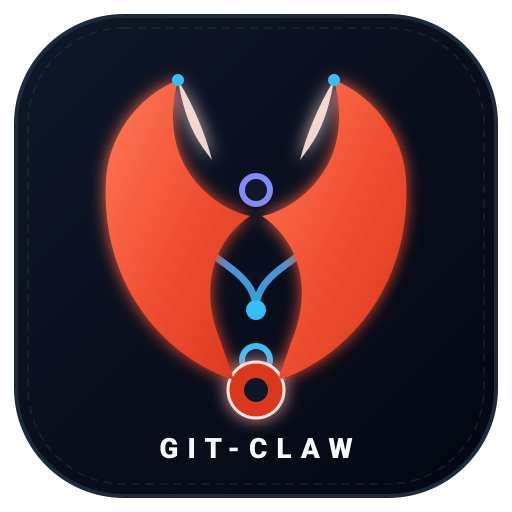

A visual cheatsheet for deterministic Git Worktrees orchestration across human developers and AI agents.
Parallel human and AI workspaces without port conflicts, container clashes, or test database collisions.
git checkout), every branch lives in its own isolated directory:
Effective Port = Base Port + Slot ID.TEST_DATABASE_NAME and CLAW_TEST_DB per slot..env.worktree and symlinks node_modules, target, .venv.Install prebuilt binaries or build with Cargo, then enable shell integration.
git-claw automatically as git claw.shell-hook for opt-in --cd on start and automatic return to main on finish/drop. Also generate completions for Fish, Bash, or Zsh.Zero configuration out of the box, with guided project initialization.
.env files, Compose files, .python-version, uv.lock, .venv, and .nvmrc. Guards against overwriting existing config unless confirmed or --yes is passed.Develop and ship parallel branches safely.
feature|bugfix|hotfix/<name>, allocates a Slot ID, generates .env.worktree, and symlinks shared caches.
--cd: navigate active shell into the worktree (default stays on primary repo).--isolated: skips shared cache symlinking.
.env.worktree loaded, or push with upstream tracking.
pre_finish hooks (blocks merge on failure unless --force), merges into main_branch, removes worktree and local/remote branches (preserve remote with --keep-remote / -k), and frees the Slot ID.
First-class isolation for full-stack Python, Django, Node, and Docker Compose projects.
[docker] configured, git-claw generates docker-compose.override.yml using container_name: !reset, sets shared services (postgres, redis) to scale: 0, attaches external networks, and injects TEST_DATABASE_NAME / CLAW_TEST_DB.
.python-version (PYENV_VERSION), symlinks .venv for uv/venv (VIRTUAL_ENV + PATH), copies .nvmrc/.node-version/.envrc, and auto-opens branches in Herdr when HERDR_ENV=1.
--json)Deterministic single-document JSON payloads across inspection and lifecycle commands.
--json to list, start, publish, finish, spike drop, or init --yes. Hook and diagnostic output stays off stdout so callers can parse stdout cleanly.
Experimental exploration intended to be discarded without merging.
spike/<name>. Dropping safely destroys the directory, deletes the branch, and releases the Slot ID.
Automated Commitizen-style releases and manifest synchronization.
main branch without arguments:
feat!:, Minor: feat:, Patch: fix:).CHANGELOG.md grouped by category.Cargo.toml (Rust) or pyproject.toml / project.toml (Python).Cargo.lock, uv.lock).chore: release <version> and tags main.Complete syntax table for all git-claw actions.
| Command | Action |
|---|---|
| git claw init [-y] [--json] | Initialize or update repository configuration |
| git claw list [--json] | Display active worktrees, assigned slots, and ports |
| git claw feature|bugfix|hotfix start <name> [--isolated] [--cd] [--json] | Create and start isolated worktree |
| git claw publish [<name>] [--remote <r>] [--json] | Push worktree branch to remote with upstream tracking |
| git claw finish [<name>] [--force] [-k|--keep-remote] [--json] | Verify tests, merge into main, delete branch, and cleanup |
| git claw spike start <name> [--isolated] [--cd] [--json] | Create disposable experiment worktree |
| git claw spike drop <name> [--json] | Discard disposable experiment worktree and branch |
| git claw open|cd [<name>] | Open workspace in editor or print worktree path |
| git claw run [<name>] <command...> | Execute command inside worktree with env injected |
| git claw tag [<version>] | Commitizen auto bump or explicit release tag |
| git claw shell-hook [bash|zsh|fish] | Emit shell auto-cd wrapper script |
| git claw completion <shell> | Generate shell auto-completion script |